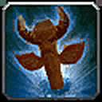
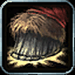

Find Treasure



The only Alliance option: Stoneform, Mace Specialization and Big Game Hunter.


Best raw DPS: Blood Fury, Axe Specialization, Shatter Curse and Hardiness.


Berserking is decent and Rapid Regeneration heals; Regeneration is basically useless.


War Stomp is a nice utility stun; Plainsrunning does not stack with Ghost Wolf.

Wind Blessed, Skysight, Walk on Air: all around underwhelming.